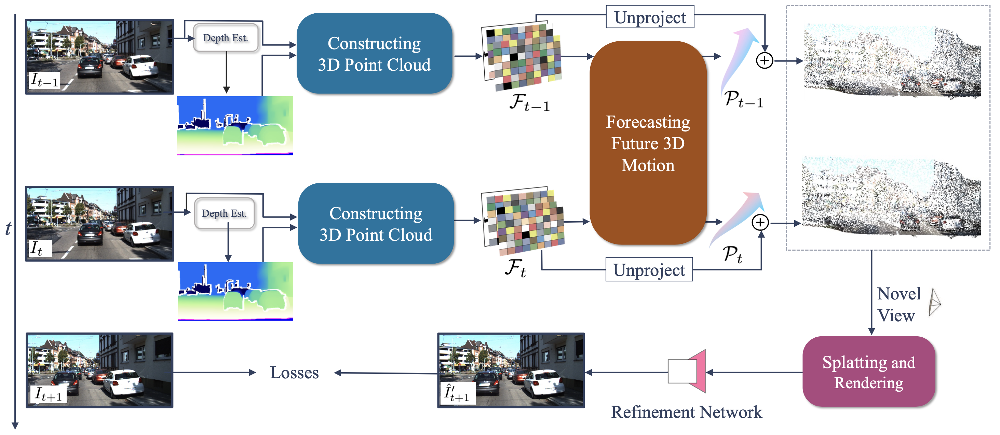
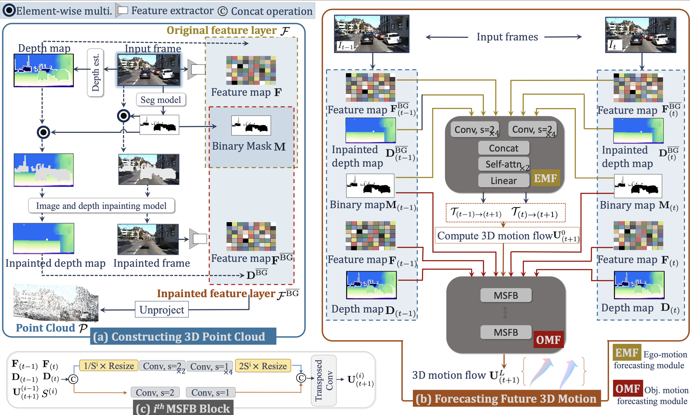

Method

Our framework aims to forecast a 3D scene into the future and view it from novel viewpoints. It comprises three primary steps:
1. Constructing 3D point clouds:
Starting with two past frames as the input, we construct per-frame 3D point clouds.
(i) The process for each frame involves depth estimation, dis-occlusion handling via inpainting, and feature extraction to finally generate what we refer to as feature layer.
(ii) The point-wise features in this feature layer are then lifted into 3D space using corresponding depth values, generating 3D point clouds. This process is performed on both \( \mathbf{I}_{(t-1)} \) and \( \mathbf{I}_{(t)} \) to obtain feature layers \( \mathcal{F}_{(t-1)} \) and \( \mathcal{F}_{(t)} \) and point clouds \( \mathcal{P}_{(t-1)} \) and \( \mathcal{P}_{(t)} \).
2. Forecasting future 3D motion:
We leverage the feature layers \( \mathcal{F}_{(t-1)} \) and \( \mathcal{F}_{(t)} \) to forecast future 3D motion for each of the point clouds. This forecasted 3D motion allows us to update the positions of point clouds \( \mathcal{P}_{(t-1)} \) and \( \mathcal{P}_{(t)} \) to their new, forecasted locations.
3. Splatting and Rendering:
A point-based renderer processes these motion-adjusted point clouds through 3D-to-2D splatting to generate feature maps. Finally, a refinement network takes these rendered feature maps and decodes them to synthesize a novel view \( \hat{I}'_{(t+1)} \) based on the target viewpoint.
Method

Our framework aims to forecast a 3D scene into the future and view it from novel viewpoints. It comprises three primary steps:
1. Constructing 3D point cloud:
(1) Estimate the depth map \( \mathbf{D} \) from the input image \( \mathbf{I} \).
(2) Address "holes" in future frames caused by dis-occlusions from dynamic object motion:
(i) Segment dynamic category (foreground) objects to produce a binary mask \( \mathbf{M} \), identifying potential regions for "holes".
(ii) Mask these foreground regions in both input image and depth map, then inpaint them using the background context.
(3) Extract features from both original and inpainted frames to produce \( \mathcal{F}_{(t)} \) and \( \mathcal{F}^{\overline{\text{BG}}}_{(t)} \).
(4) Create 3D point cloud \( \mathcal{P} \) by unprojecting the 2D features \( \mathbf{F} \) and \( \mathbf{F}^{\overline{\text{BG}}} \) into 3D, using depth maps \( \mathbf{D} \) and \( \mathbf{D}^{\overline{\text{BG}}} \), respectively. For simplicity, we refer to the set \( \{\mathbf{F}, \mathbf{D}, \mathbf{M}\} \) as original feature layer, denoted by \( \mathcal{F} \), and the set \( \{\mathbf{F}^{\overline{\text{BG}}}, \mathbf{D}^{\overline{\text{BG}}}, \mathbf{M}\} \) as inpainted feature layer \( \mathcal{F}^{\overline{\text{BG}}} \).
2. Forecasting future 3D motion:
Given feature layers from past frames, our method forecasts future 3D motion flow in two stages:
(1) Ego-motion forecasting using the EMF module, which processes the background (static category) across frames using inpainted feature layers \( \mathcal{F}_{(t-1)}^{\overline{\text{BG}}} \) and \( \mathcal{F}_{(t)}^{\overline{\text{BG}}} \), yielding two relative ego-pose transformations, \( \mathcal{T}_{(t-1) \rightarrow (t+1)} \) and \( \mathcal{T}_{(t) \rightarrow (t+1)} \). These transformations lead to initial 3D motion flows \( \mathbf{u}^{0}_{(t-1) \rightarrow (t+1)} \) and \( \mathbf{u}^{0}_{(t) \rightarrow (t+1)} \), referred to as \( \mathbf{U}^{0}_{(t+1)} \).
(2) The OMF module then refines the initial 3D motion flow \( \mathbf{U}^{0}_{(t+1)} \) by accounting for foreground object motion, using original and inpainted feature layers to derive the final forecasted 3D motion flow, \( \mathbf{U}^{L}_{(t+1)} \), after \( L \) MMFB blocks.
3. Multi-scale motion flow block (MMFB):
We illustrate the design of an MMFB block here.